리눅스 파일 시스템 구조, inode, mount 명령, fdisk로 파티션 생성, mkfs mke2fs 파일 시스템 생성
리눅스 파일 시스템 구조
- 파일은 inode로 관리한다.
- 디렉터리는 단순히 파일의 목록을 가지고 있는 파일일 뿐이다.
-
특수 파일을 통해 장치에 접근할 수 있다.
- ext4 파일 시스템의 구조
- ext4 파일 시스템은
효율적으로 디스크를 사용하기 위해저장 장치를논리적인 블록의 집합(블록 그룹)으로구분한다. - 일반적으로 블록은 4KB이고 실제 크기는 시스템의 설정에 따라 달라질 수 있다.
- ext4 파일 시스템은
- 블록 그룹 0: 파일 시스템의 첫 번째 블록 그룹으로 특별하게
그룹 0 패딩과수퍼블록, 그룹 디스크립터를 가지고 있다.- 그룹 0 패딩: 블록 그룹 0의 첫 1024Byte는 특별한 용도로 사용, x86 부트 섹터와 부가 정보 저장
- 수퍼블록: 파일 시스템에 대한 다양한 정보가 저장된다.
- 전체 inode 개수, 할당되지 않은 블록(free block) 개수, 첫 번째 데이터 블록의 주소, 그룹당 블록의 개수,
파일 시스템의 생태, 전체 블록의 개수, 할당되지 않은 inode(free inode)개수, 블록의 크기, 마운트 시간,
그룹 디스크립터의 크기 - 수퍼 블록에 문제가 생길 경우 전체 파일 시스템을 사용할 수 없게된다. 따라서 수퍼 블록을 다른 블록 그룹에 복사하고, 블록 그룹 0의 수퍼블록을 읽을 수 없는 경우 복사본을 사용하여 복구한다.
- 전체 inode 개수, 할당되지 않은 블록(free block) 개수, 첫 번째 데이터 블록의 주소, 그룹당 블록의 개수,
- 그룹 디스크립터
- 블록 비트맵의 주소, inode 비트맵의 주소, inode 테이블의 주소, 할당되지 않은 블록의 개수, 할당되지 않은 inode의 개수, 디렉터리의 개수, 블록 비트맵, inode 비트맵 체크섬
- 이 것도 copy되어 블록 그룹0이 문제가 있을 때 복구하는 데 사용된다.
- GDT 예약 블록
- 그룹 디스크립터의 확장을 위한 예비공간
- 데이터 블록 비트맵
- 블록 그룹에 포함된 데이터 블록의 사용 여부 확인하는데 사용됨
- inode 비트맵
- inode 테이블의 항목(inode)가 사용 중인지를 표시한다.
- 비트맵에서 각 데이터 블록과 inode 테이블 항목은 1bit로 표시한다.
- inode 테이블
- inode에 파일 정보를 저장한다.
데이터 블록실제 데이터가 저장된다.- 일반적인 파일: 데이터 블록에 실제 파일 내용 저장
- 디렉터리: 해당 디렉터리에 있는 파일이나 서브 디렉터리의 이름과 inode를 저장한다.
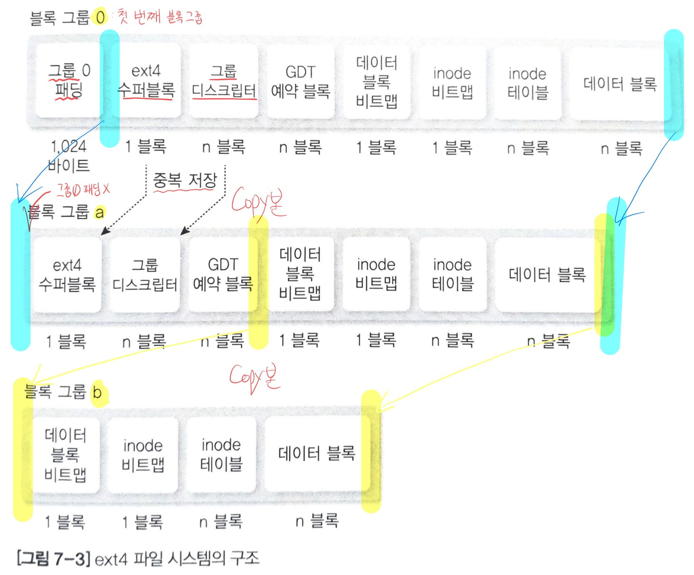
- 블록 그룹 a: 그룹 0 패딩이 없지만 수퍼블록과 그룹 디스크립터에 대한 복사본을 가지고 있다.
- 블록 그룹 b: 데이터 블록 비트맵 ~ 데이터 블록 copy본
inode 구조
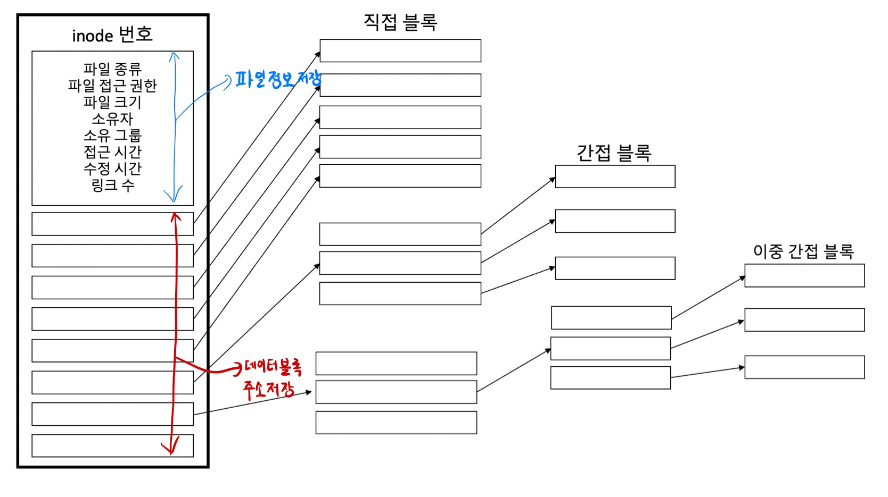
- inode는
파일 정보 저장 부분,데이터 블록(파일 내용 실제 저장)주소 저장부분 나뉨 - 데이터 블록 주소 저장
- 직접 블록(direct block): 데이터 블록에 대한 주소를 ‘직접 가지고 있음’
- 간접 블록(indirect block): 데이터 블록에 대한 주소를 가지고 있는 블록에 대한 주소를 저장한다.
- 이중 간접 블록(double indirect block)
- 데이터 블록의 크기는 시스템 설정에 따라 1KB ~ 8KB까지 정의
파일 시스템과 디렉터리 계층 구조
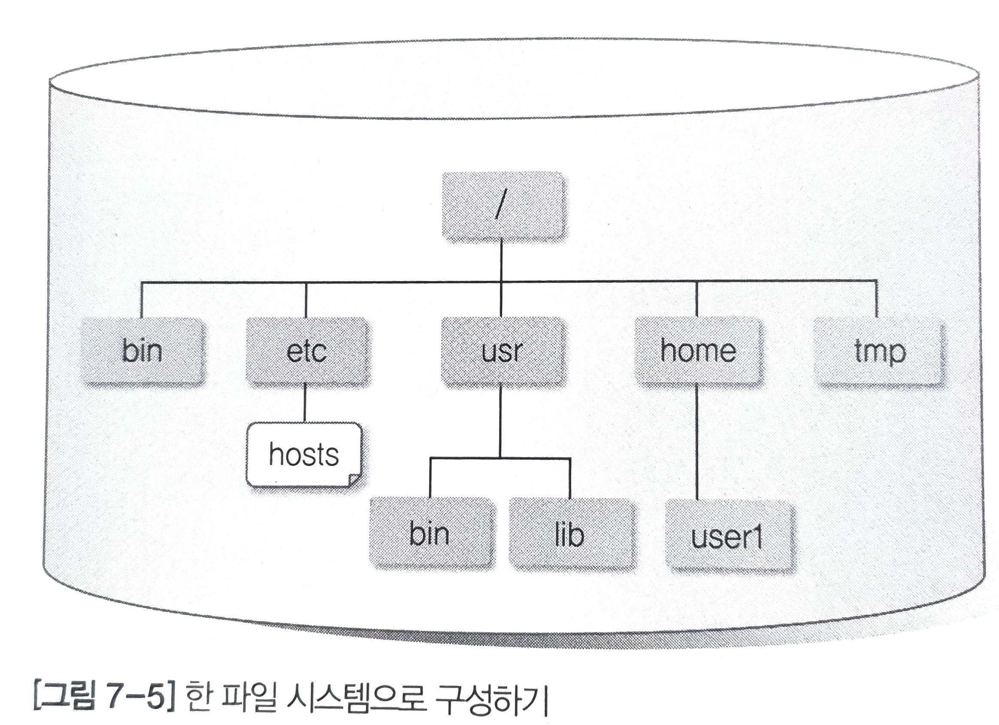
- 한 파일 시스템으로 구성하기
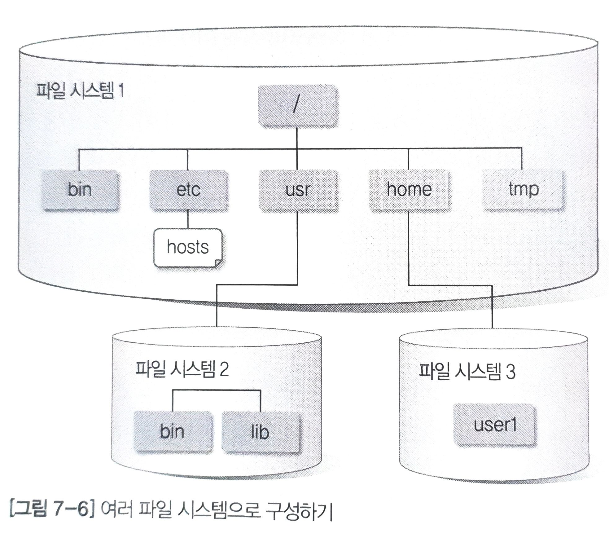
- 여러 파일 시스템으로 구성하기
- 파일 시스템1: / 디렉터리에 연결
- 파일 시스템2: /usr 디렉터리에 연결
- 파일 시스템3: /home 디렉터리에 연결
- 윈도우에서 파티션 C, D로 나누는 것과 유사
파일 시스템 마운트
- 파일 시스템이 디렉터리 계층 구조와 연결되지 않으면 사용자가 해당 파일 시스템에 접근할 수 없다.
-
파일 시스템을 디렉터리 계층 구조의 특정 디렉터리와 연결하는 것을
마운트라고 한다. - 마운트 포인트
- 디렉터리 계층 구조에서
파일 시스템이 연결되는 디렉터리를마운트 포인트라고 한다.
- 디렉터리 계층 구조에서
- 파일 시스템 마운트 설정 파일
- 리눅스에서
자동으로 파일 시스템 마운트하려면 /etc/fstab 파일에 설정해야한다.
- 리눅스에서
- /etc/fstab 파일의 구조
- /etc/fstab 파일은 아래와 같이 여섯 항목으로 구성되어 있다.
- 장치명
- 마운트 포인트
- 파일 시스템의 종류
- 옵션
- 덤프 관련 설정
- 파일 점검 옵션
- /etc/fstab 파일은 아래와 같이 여섯 항목으로 구성되어 있다.
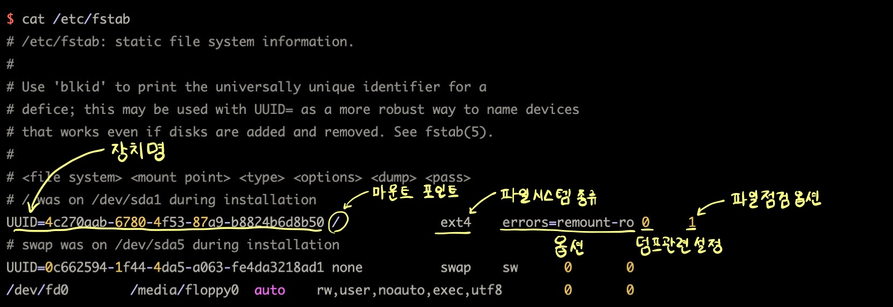
- 장치명
- /etc/fstab 파일의 첫 번째 항목에는 파일 시스템 장치명을 설정한다.
- 예를들어 /dev/hda1, /dev/sda1과 같이 특정 디스크를 지정하는 것이다.
- UUID(Universally unique identifier), 로컬 시스템과 다른 시스템에서 파일 시스템을 유일하게 구분해주는 128비트 숫자
- UUID는 시스템의 HW 정보와 시간 정보를 조합하여 랜덤으로 생성된다.
- 디스크가 추가될 때 부트 로더를 가지고 있는 부트 장치의 이름이 바뀌는 것을 방지하기 위해 사용된다.
- UUID로 지정된 장치는
/dev/disk/by-uuid디렉터리에서 찾을 수 있다.$ ls -l /dev/disk/by-uuid 합계 0 lrwxrwxrwx 1 root root 10 2월 22 10:30 0c662594-1f44-4da5-a063-fe4da3219ad1 -> ../../sda5 lrwxrwxrwx 1 root root 10 2월 22 10:30 4c270aab-6780-4f53-87a9-b8824b6d8b50 -> ../../sda1UUID로 지정한 부트 장치가 /dev/sda1 장치의 심볼릭 링크임을 알 수 있다. (/는 /dev/sda1의
심볼릭 링크)
- 마운트 포인트
- 어디에 마운트 시킬 것인가?
- 파일 시스템의 종류
- ext2, ext3, ext4외에 지원 파일 시스템 사용 가능
- 옵션
- 파일 시스템의 속성 지정
속성 의미 defaults 일반적인 파일 시스템에서 지정하는 속성. rw, nouser, auto, exec, suid 속성을 모두 포함한다. auto 부팅 시 자동으로 마운트 된다. exec 실행 파일이 실행되는 것을 허용한다. suid setuid, setgid의 사용을 허용한다. ro 읽기 전용 파일 시스템 rw 읽기, 쓰기가 가능한 파일 시스템 user 일반 사용자도 마운트가 가능하다. nouser 일반 사용자의 마운트가 불가능하다. root 계정만 마운트할 수 있다. noauto 부팅 시 자동으로 마운트하지 않는다. noexec 실행 파일이 실행되는 것을 허용하지 않는다. nosuid setuid, setgid의 사용을 금한다. usrquota 사용자별로 디스크 쿼터 설정이 가능하다. grpquota 그룹별로 디스크 쿼터 설정이 가능하다. errors=remount-ro는 오류 발생 시, 읽기 전용으로 다시 마운트해라
- 덤프 관련 설정
- 0/1 을 설정한다.
- 0: dump 명령으로 파일 시스템의 내용이 덤프되지 않는 파일 시스템
- 1: 데이터 백업 등을 위해 dump명령의 사용이 가능한 파일 시스템
- 파일 점검 옵션
- 0/1/2 지정한다.
- 0: 부팅 시, fsck 명령으로 파일 시스템을 점검하지 않도록 하는 설정
- 1: 부팅 시, fsck 명령으로 루트 파일 시스템 점검
- 2: 부팅 시, fsck 명령으로 루트 파일 시스템 이외의 파일 시스템 점검
여기 옵션이 1이므로, 루트 파일 시스템으로 부팅할 때 파일 시스템을 점검해야함
mount: 마운트 명령
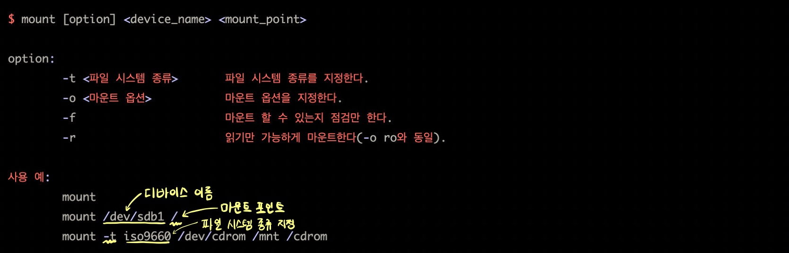
- mount 명령만 사용하는 경우
- 현재 마운트되어 있는 정보가 출력된다.
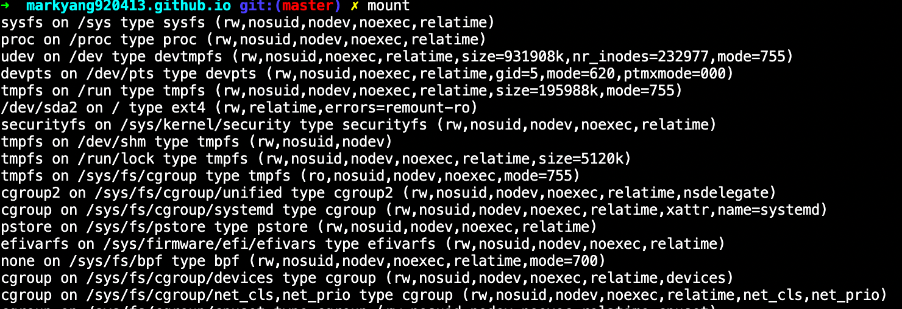 - /etc/mtab 파일 내용과 동일하다.
- 현재 시스템에 마운트된 파일 시스템에 대한 정보가 저장되어 있다.
- /proc/mounts에 대한 심볼릭 링크로서, 읽기 전용 파일이다.
- 여기도 /etc/fstab 처럼 구조로 이루어져있다.
- <장치명> <마운트 포인트> <파일 시스템 종류> <마운트 옵션> <사용하지 않는 항목 두개 0 0>
- 마지막 사용하지 않는 항목 두 개는 /etc/fstab과 호환성을 위해 추가한 것
- 마지막 사용하지 않는 항목 두 개는 /etc/fstab과 호환성을 위해 추가한 것
- 현재 마운트되어 있는 정보가 출력된다.
- mount 명령으로 장치를 연결하는 방법
$ mount /dev/sdb1 /mnt- /dev/sdb 장치이고 1이 파티션 번호
- /mnt 가 장치의 마운트 포인트
-
다양한 mount 명령의 예
장치 mount 명령 ext2 mount -t ext2 /dev/sdb1 /mnt ext3 mount -t ext3 /dev/sdb1 /mnt ext4 mount -t ext4 /dev/sdb1 /mnt
mount /dev/sdb1 /mntCD-ROM mount -t iso9660 /dev/cdrom /mnt/cdrom 윈도 디스크 mount -t vfat /dev/hdc /mnt USB 메모리 mount /dev/sdc1 /mnt (리눅스용 USB 메모리)
mount -t vfat /dev/sdc1 /mnt(윈도우용 USB 메모리)읽기 전용 마운트 mount -r /dev/sdb1 /mnt 읽기/쓰기 마운트 mount -w /dev/sdb1 /mnt 원격 디스크 마운트 mount -t nfs 서버주소:/NFA 서버측 디렉터리 /mnt
USB 메모리 연결하기
- 기존에 사용하던 USB 메모리면 자동으로 디렉터리에 마운트될 수 있다.
mount명령을 실행해보면마지막에 장치가 추가되어 있음을 확인할 수 있다.$ mount (생략) /dev/sdb1 on /media/user1/5255-B26B type vfat (rw,nosuid,nodev,uid=1000,gid=1000,shortname=mixed,dmask=0077,utf8=1,showexec,flush,uhelper=udisk2) - 리눅스에서 사용하는 USB 메모리가 아니라면, 마운트 해제하고 파일 시스템 생성 작업해야한다.
- 마운트 해제
USB 메모리 파티션 생성
- fdisk -l(소문자 L)
- fdisk: 리눅스 시스템에
연결된 저장 장치의 장치명 확인- fdisk 명령은 하드디스크의 파티션을 나눌 때 사용하는 것으로, root 권한 필요
$ sudo fdisk -l (생략) Disk /dev/sdb: 2056 MB, 2056257536 bytes 16 heads, 32 sectors/track, 7844 cylinders, total 4016128 sectors Units = sectors of 1 * 512 = 512 bytes Sector size (logical/physical): 512 bytes / 512 bytes I/O size (minimum/optimal): 512 bytes / 512 bytes Disk identifier: 0x4595dc7f Device Boot Start End Blocks Id System /dev/sdb1 32 4016127 2008048 6 FAT16- USB 장치 명: /dev/sdb1 확인
- fdisk: 리눅스 시스템에
- fdisk 로
새로운 파티션 생성$ sudo fdisk /dev/sdb Command (m for help): # 여기서 fdisk는 커맨드를 기다린다. a toggle a bootable flag b edit bsd disklabel c toggle the dos compatibility flag d list known partition types l list known partition types m print this menu n add a new partition o create a new empty DOS partition table p print the partition table q quit without saving changes s create a new empty Sun disklabel t change a partition's system id u change display/entry units v verify the partition table w write table to disk and exit x extra functionality (experts only) Command (m for help): 새로운 파티션을 생성하려는 것이므로n을 입력한다.- n을 입력하면 파티션을
기본(primary) 파티션으로 할 것인지,확장(extended) 파티션으로 할 것인지를 선택한다. - 기본 값은 기본(p) 파티션이다.
Command (m for help): n Partition type: p primary (1 primary, 0 extended, 3 free) e extended Select (default p):- n을 입력하면 파티션을
- 다음으로 생성할
파티션 번호를 지정한다.- 아래와 같이 1번을 선택했는데
이미 사용중이라면, USB 메모리가 새것이 아니라 이미 파티션이 생성되어 있다는 뜻이므로삭제 후 다시 생성해야한다.
Select (default p): p Partition number (1-4, default 2): 1 Partition 1 is already defined. Delete it before re-adding it. Command (m for help): - 아래와 같이 1번을 선택했는데
-
d를 선택하면파티션 삭제Command (m for help): d Selected partition 1 Command (m for help): - 다시
n입력하여새로운 파티션을 생성한다.- 파티션 번호: 1
- 시작 섹터와 마지막 섹터를 지정한다. 특별한 이유가 없는 한 기본 값 사용
Command (m for help): n Partition type: p primary (1 primary, 0 extended, 3 free) e extended Select (default p): # 걍 엔터 Using default response p Partition number (1-4, default 1): # 걍 엔터 Using default value 1 First sector (2048-4016127, default 2048): Using default value 2048 Last sector, +sectors or +sizeK,M,G (2048-4016127, default 4016127): Using default value 4016127 Command (m for help): -
p명령을 사용하여파티션이 제대로 설정되었는지 확인Command (m for help): p Disk /dev/sdb: 2056 MB, 205625736 bytes 16 heads, 32 sectors/track, 7844 cylinders, total 4016128 sectors Units = sectors of 1 * 512 = 512 bytes Sector size (logical/physical): 512 bytes / 512 bytes I/O size (minimum/optimal): 512 bytes / 512 bytes Disk identifier: 0x4595dc7f Device Boot Start End Blocks Id System /dev/sdb1 2048 4016127 2007040 83 Linux Command (m for help) w를 입력하여파티션 설정 정보를 파티션 테이블에 기록한다.- 파티션 테이블에 기록되면 이전에 있던 정보는 없어진다.
- 이제 USB메모리에 파티션이 생성되었다.
Command (m for help): w The partition table has been altered! Calling ioctl() to re-read partition table. WARNING: Re-reading the partition table failed with error 16: 장치나 자원이 동작 중. The kernel still uses the old table. The new table will be used at the next reboot or after you run partprobe(8) or kpartx(8) Syncing disks.생성한 파티션을 포맷하여파일 시스템 생성- 파티션을 만든 후에 바로 USB메모리에 파일을 저장할 수 없다.
- 먼저 포맷을 통해 파일 시스템을 생성해야 한다.
- 파일 시스템을 생성하는 데는
mke2fs명령을 사용
$ sudo mke2fs -t ext4 /dev/sdb1 mke2fs 1.42.8 (20-Jun-2013) Filesystem label= OS type: Linux .....(생략)-
마운트한다.$ sudo mount /dev/sdb1 /mnt # 마운트! $ mount # 마운트 확인 ..(생략).. /dev/sdb1 on /mnt type ext4 (rw) -
장치 해제
CD-ROM 연결
- CD-ROM 장치를 USB로 연결하여 리눅스 시스템에 인식시킨다.
- CD-ROM을 마운트한다. CD-ROM의 장치명은 기본적으로
/dev/cdrom을 사용한다. -
파일 시스템 종류는
iso9660이며, 기본적으로 읽기 전용으로 마운트된다.$ sudo mount -t iso9660 /dev/cdrom /mnt mount: block device /dev/sr0 is write-protected, mounting read-only $ ls -l /dev/cdrom lrwxrwxrwx 1 root root 3 2월 22 10:30 /dev/cdrom -> sr0 - 메시지에 /sr0로 표시 된 것은 /dev/cdrom이 /sr0에 대한 심벌릭 링크
디스크 추가 설치
- HDD를 추가 장착 해보자!
-
새 디스크 장착 -> 디스크 파티션 나눔 -> 포맷 -> 마운트
- 디바이스 인터페이스
- IDE, SATA, SCSI
- SCSI: 서버급 장치
- 현재 가상머신에서 현재 디스크는 SCSI 0번 컨트롤러의 첫 번째 슬롯에 연결 (SCSI 0:0), CD-ROM은 SATA에 연결 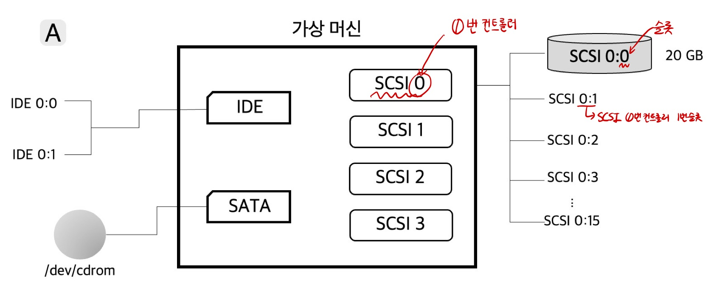
- 여기서 SCSI 디스크 세개 추가 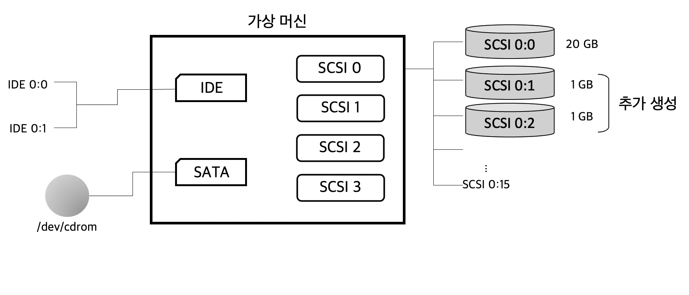
- IDE, SATA, SCSI
디스크 파티션 나누기
- 새로운 디스크 장착이 완료되었으므로 이제 디스크의 파티션을 생성해야한다.
- 디스크 하나를 하나의 파티션으로 사용할 수도 있고, 여러 개의 파티션으로 나눌 수도 있다.
디스크 장치 이름
- IDE 컨트롤러:
/dev/hdXXX - SCSI/SATA :
/dev/sdXXX- 최근 추세는 구분 없이 /dev/sdXXX 로 넣는 추세
sda(첫 번째),sdb(두 번째) …- sda0 첫 번째 디스크의 첫째 파티션
- sda1 첫 번째 디스크의 두번째 파티션
fdisk명령
fdisk: 디스크의 파티션 생성
$ fdisk [option] 장치명
option:
-b <크기> : 섹터 크기를 지정한다(512, 1024, 2048, 4096).
-l : 파티션 테이블을 출력한다.
사용 예:
fdisk /dev/sdb
fdisk -l
fdisk 내부 명령
| 내부 명령 | 기능 |
| a | 부팅 파티션 설정 |
| b | BSD 디스크 라벨을 편집 |
| c | 도스 호환성 설정 |
| d | 파티션 삭제 |
| l(소문자 L) | 사용 가능한 파티션의 종류 출력 |
| m | 도움말을 출력 |
| n | 새로운 파티션 추가 |
| o | 새로운 빈 DOS 파티션 생성 |
| p | 파티션 테이블 출력 |
| q | 작업 내용을 저장하지 않고 출력한다. |
| s | 새로운 빈 Sun 디스크 라벨을 출력한다. |
| t | 파티션의 시스템 ID를 변경한다(파일 시스템 종류 변경). |
| u | 항목 정보를 변경/출력 한다. |
| v | 파티션 테이블을 검사한다. |
| w | 파티션 정보를 디스크에 저장하고 종료한다. |
| x | 실린더 갯수 변경 등 정문가를 위한 부가적 기능이다. |
fdisk로 파티션 정보보기
- fdisk -l(소문자 L)을 사용하면 전체 디스크의 파티션 정보를 볼 수 있다.
- 현재 시스템에 장착된 디스크의 정보를 확인하면, 아래와 같다.
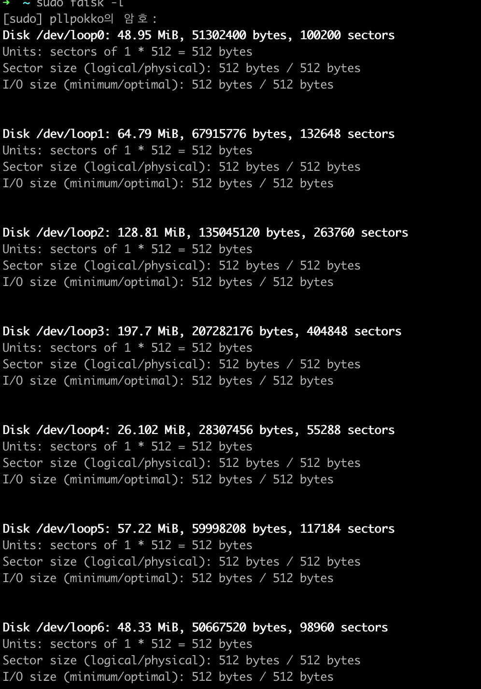
- 현재 시스템에 장착된 디스크의 정보를 확인하면, 아래와 같다.
fdisk로 파티션 나누기
- fdisk명령 실행한다.
$ sudo fdisk /dev/sdb # sdb 디바이스를 파티션 나눌 것이다.
Device contains neither a valid DOS partition table, nor Sun, SGI or OSF
disklabel
Building a new DOS disklabel with disk identifier 0x2fa4c807.
Changes will remain in memory only, until you decide to write them.
After that, of course, the previous content won't be recoverable.
Warning: invalid flag 0x0000 of partition table 4 will be corrected by w(rite)
Command (m for help):
- 새로운 파티션을 생성한다.
새로운 파티션을 생성하기 위해서는n을 입력해야 한다.
n을 입력하면 파티션의 종류를 선택하는 메뉴가 출력된다.
Command (m for help): n
Partition type:
p primay (0 primary, 0 extended, 4 free)
e extended
Select (default p):
- 파티션의 종류를 선택한다. 파티션은
기본 파티션과확장 파티션이 있는데,
기본 파티션을 선택하면 파티션의 번호를 선택하는 메뉴가 출력된다.
Select (default p): p
Partition number (1-4, default 1):
- 첫 번째 파티션이므로 1을 선택한다.
파티션 번호를 입력하면용량설정하기 위한 메뉴가 출력된다.
Partition number (1-4, default 1): 1
First sector (2048-2097151, default 2048):
- 파티션의
크기를 설정한다.
시작 섹터는 기본 값을 사용하고, 마지막 섹터를 설정하는 메뉴에서는 크기를 500MB로 할 것이므로 +500M를 입력한다.
이제 파티션의 정보가 설정되었다.
First sector (2048-2097151, default 2048):
Using default value 2048
Last sector, +sectors or +sizeK,M,G (2048-2097151, default 2097151): +500M
Command (m for help):
- 파티션
설정 정보를 확인한다.p를 입력하면 현재 설정된 파티션의 정보가 출력되는데,/dev/sdb1이 설정되었음을 알 수 있다.
Command (m for help): p
Disk /dev/sdb: 1073MB, 10737741824 bytes
255 heads, 63 sectors/track, 130 cylinders, total 2097152 sectors
Units = sectors of 1 * 512 = 512 bytes
Sector size (logical/physical): 512 bytes / 512 bytes
I/O size (minimum/optimal): 512 bytes / 512 bytes
Disk identifier: 0x2fa4c807
Device Boot Start End Blocks Id System
/dev/sdb1 2048 1026047 512000 83 Linux
Command (m for help):
- n을 선택하면 두 번째 파티션을 생성한다.
1번 파티션과 동일하게 기본 파티션(p), 파티션 번호는 2, 용량은 +500M으로 한다.
Command (m for help): n
Partition type:
p primary (1 primary, 0 extended, 3 free)
e extended
Select (default p): p
Partition number (1-4, default 2):
Using default value 2
First sector (1026048-2097151, default 1026048):
Using default value 1026048
Last sector, +sectors or +sizeK,M,G (1026048-2097151, default 2097151): +500M
Command (m for help):
- 파티션 설정 정보를 확인한다.
p를 입력하면 현재 설정된 파티션의 정보가 출력되는데 /dev/sdb1과 /dev/sdb2가 모두 설정 되었음을 알 수 있다).
Command (m for help): p
Disk /dev/sdb: 1073MB, 10737741824 bytes
255 heads, 63 sectors/track, 130 cylinders, total 2097152 sectors
Units = sectors of 1 * 512 = 512 bytes
Sector size (logical/physical): 512 bytes / 512 bytes
I/O size (minimum/optimal): 512 bytes / 512 bytes
Disk identifier: 0x2fa4c807
Device Boot Start End Blocks Id System
/dev/sdb1 2048 1026047 512000 83 Linux
/dev/sdb2 1026048 2050047 512000 83 Linux
Command (m for help):
w를 입력하면파티션 설정 정보를 디스크에 기록하고 fdisk를 종료한다.
Command (m for help): w
The partition table has been altered!
Calling ioctl() to re-read partition table.
Syncing disk.
디스크 파티션 작업이 끝나면 파티션에 파일 시스템을 생성해야한다.
mkfs, mke2fs 파일 시스템 생성
- 리눅스에서 파일 시스템을 생성할 때 사용하는 명령은
mkfs와mke2fs가 있다.
$ mkfs [option] 장치명
option:
-t <종류> : 파일 시스템의 종류를 지정한다(기본 값은 ext2).
사용 예:
mkfs /dev/sdb1
mkfs -t ext4 /dev/sdb1
mkfs: 리눅스 파일 시스템을 만든다.
$ mke2fs [option] 장치명
option:
-t <종류> : 파일 시스템의 종류를 지정한다. 기본 값은 ext2이다.
-b <블록 크기> : 블록 크기를 바이트 수로 지정한다.
-c : 배드 블록을 체크한다.
-f <프래그먼트 크기> : 프래그먼트 크기를 바이트 수로 지정한다.
-i <inode당 바이트 수> : inode당 바이트 수를 지정한다. 기본 값은 4,096byte.
-m <예약 블록 퍼센트> : 슈퍼유저에게 예약해둘 블록의 퍼센트를 지정한다. 기본 값은 5이다.
사용 예:
mke2fs /dev/sdb1
mke2fs -t ext4 /dev/sdb1
mke2fs: 리눅스 개정판 확장 파일 시스템(ext2, ext3, ext4)를 만든다.
mke2fs명령은 별도의 설정 파일이 있다. 이는 /etc/mke2fs.conf 파일로 파일 시스템의 종류에 따라 기본적으로 설정할 값들을 정의하고 있다.
$ cat /etc/mke2fs.conf
[defaults]
base_features = sparse_super,large_file,filetype,resize_inode,dir_index,ext_attr
default_mntopts = acl,user_xattr
enable_periodic_fsck = 0
blocksize = 4096
inode_size = 256
inode_ratio = 16384
[fs_types]
ext3 = {
features = has_journal
}
ext4 = {
features = has_journal,extent,huge_file,flex_bg,metadata_csum,64bit,dir_nlink,extra_isize
inode_size = 256
}
small = {
inode_size = 128
inode_ratio = 4096
}
floppy = {
inode_size = 128
inode_ratio = 8192
}
big = {
inode_ratio = 32768
}
huge = {
inode_ratio = 65536
}
news = {
inode_ratio = 4096
}
largefile = {
inode_ratio = 1048576
blocksize = -1
}
largefile4 = {
inode_ratio = 4194304
blocksize = -1
}
hurd = {
blocksize = 4096
inode_size = 128
}
[options]
fname_encoding = utf8
- mkfs, mke2fs 명령은
/sbin디렉터리에 있다.- 여기서 mkfs.ext3 명령은 mkfs -t ext3 명령과 동일하다.
$ ls /sbin/mk*
/sbin/mkdosfs /sbin/mkfs.ext2 /sbin/mkfs.minix /sbin/mkhomedir_helper /sbin/mkswap
/sbin/mke2fs /sbin/mkfs.ext3 /sbin/mkfs.msdos /sbin/mkinitramfs
/sbin/mkfs /sbin/mkfs.ext4 /sbin/mkfs.ntfs /sbin/mklost+found
/sbin/mkfs.bfs /sbin/mkfs.fat /sbin/mkfs.ubifs /sbin/mkntfs
/sbin/mkfs.cramfs /sbin/mkfs.jffs2 /sbin/mkfs.vfat /sbin/mksmbpasswd
mkfs 명령으로 파일 시스템 생성
mkfs명령으로 /dev/sdb 파티션에 파일 시스템을 생성한다.
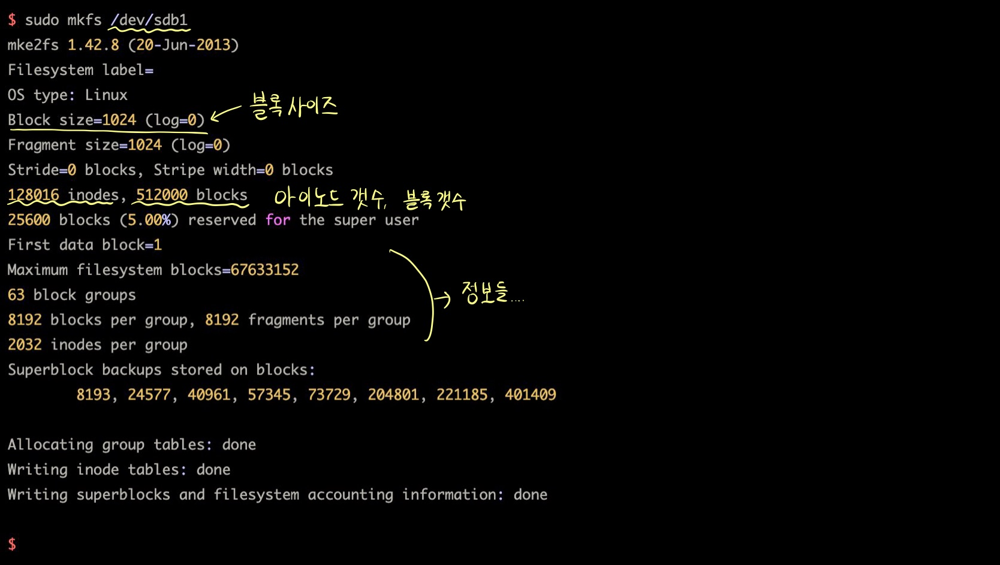
- mkfs명령으로 파일 시스템을 만들 때 출력되는 정보를 볼 수있다.
- 블록의 크기, inode의 개수, 블록의 개수, 블록 그룹의 개수, 그룹당 블록과 inode의 개수, 수퍼블록의 백업 위치 등 정보
이제 mount만 하면 바로 사용할 수 있다.
- mkfs.ext3 명령을 /dev/sdb2 파티션에 ext3 파일 시스템을 생성한다.
- mkfs.ext3 = mkfs -t ext3
$ sudo mkfs.ext3 /dev/sdb2
mke2fs 1.42.8 (20-Jun-2013)
Filesystem label=
OS type: Linux
Block size=1024 (log=0)
Fragment size=1024 (log=0)
Stride=0 blocks, Stripe width=0 blocks
128016 inodes, 512000 blocks
25600 blocks (5.00%) reserved for the super user
First data block=1
Maximum filesystem blocks=67633152
63 block groups
8192 blocks per group, 8192 fragments per group
2032 inodes per group
Superblock backups stored on blocks:
8193, 24577, 40961, 57345, 73729, 204801, 221185, 401409
Allocating group tables: done
Writing inode tables: done
Creating journal (8192 blocks): done
Writing superblocks and filesystem accounting information: done
$
- 위 메시지를 살펴보면, ext2와 ext3의 차이가 저널링기능임을 살펴볼 수 있다.
- ext3 파일 시스템을 생성하는 과정의 끝부분에 저널을 저장하는 부분을 별도로 생성한다.
mke2fs 명령으로 파일 시스템 생성하기
- mke2fs 명령으로 /dev/sdc 파티션에 ext3 파일 시스템을 생성해보자.
$ sudo mke2fs -t ext3 /dev/sdc1
mke2fs 1.42.8 (20-Jun-2013)
Filesystem label=
OS type: Linux
Block size=1024 (log=0)
Fragment size=1024 (log=0)
Stride=0 blocks, Stripe width=0 blocks
128016 inodes, 512000 blocks
25600 blocks (5.00%) reserved for the super user
First data block=1
Maximum filesystem blocks=67633152
63 block groups
8192 blocks per gorup, 8192 fragments per group
2032 inodes per group
Superblock backups stored on blocks:
8193, 24577, 40961, 57345, 73729, 204801, 221185, 401409
Allocating group tables: done
Writing inode tables: done
Creating journal (8192 blocks): done
Writing superblocks and filesystem accounting information: done
$
- mke2fs 명령으로 /dev/sdc2 파티션에 ext4 파일 시스템을 만든다.
- 블록 크기를 4096 바이트로 지정한다.
$ sudo mke2fs -t ext4 -b 4096 /dev/sdc2
mke2fs 1.42.8 (20-Jun-2013)
Filesystem label=
OS type: Linux
Block size=4096 (log=2)
Fragment size=4096 (log=2)
Stride=0 blocks, Stripe width=0 blocks
128000 inodes, 128000 blocks
6400 blocks (5.00%) reserved for the super user
First data block=1
Maximum filesystem blocks=1234217728
4 block groups
32768 blocks per gorup, 32768 fragments per group
32000 inodes per group
Superblock backups stored on blocks:
32768, 98304
Allocating group tables: done
Writing inode tables: done
Creating journal (4096 blocks): done
Writing superblocks and filesystem accounting information: done
$
디스크 마운트
-
파티션 나누기 -> 파일 시스템 생성 -> 디렉터리 계층 구조에 마운트!
-
마운트 포인트 준비하기
$ sudo mkdir /mnt/hdd1
- 파일 시스템 마운트하기
- /dev/sdb 디스크의 파일 시스템을 마운트 해보자.
$ sudo mount /dev/sdb1 /mnt/hdd1